Token Action HUD (TAH)¶
← Back to the README · Token bars: TOKEN_DISPLAY.md
Custom action menu attached to the token: actions, weapons, systems, frame abilities, talents, skills, statuses, scan glossary, and an action log. Beta. Enable in settings.
Enabling and opening¶
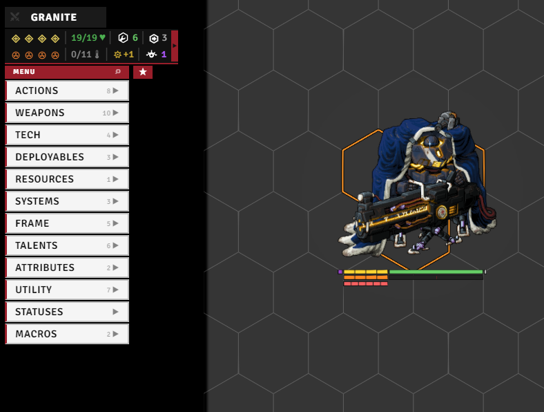
Enable it with the tahEnabled setting (needs a reload). It attaches near the top-left of the screen:
- Move it by dragging. The lock button pins it, the reset button puts it back. Stays above open actor sheets (
aboveActorSheets). - Categories open on hover by default, or set
clickToOpento open them on click.hoverCloseDelaycontrols how long the menu lingers after the mouse leaves, andmaxColumnItemsmakes long columns scroll.
Settings¶
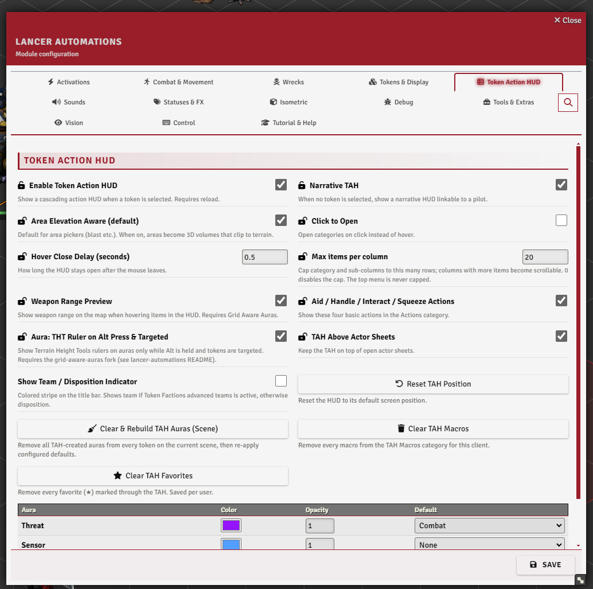
The Token Action HUD tab.
The header¶
The bar at the top of the HUD shows:
- the token name - click it to open the actor sheet (shows "N TOKENS" when several are selected),
- a combat toggle (the swords icon) to add or remove the token from combat,
- an optional team / disposition stripe down the edge (
showDisposition, uses Token Factions teams if installed, otherwise the disposition).
Stats bar¶
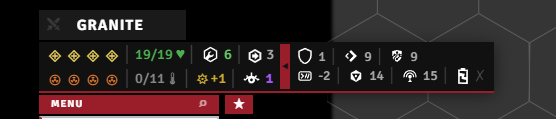
A compact readout under the header: HP, structure, overshield, repairs, and movement (used/cap in combat, or speed outside it), then heat, stress, pilot bond stress, burn, infection, overcharge, and reaction. A toggle slides out a secondary row: armor, evasion, e-defense, tech attack, save, sensor range, and core power.
Combat bar¶
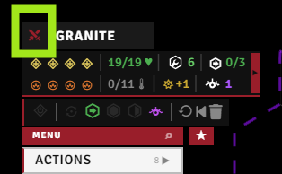
Appears while combat is running:
- Activation pips - click to spend one (start your turn), right-click to toggle availability by hand.
- An end-turn button (right-click to end the turn and give back one activation).
- Action-status icons (protocol / move / full / quick / reaction) you can toggle.
- Buttons to reset actions, revert your last move, and clear movement history (movement itself lives in MOVEMENT.md).
Action menus¶
The left column lists categories. Opening one cascades its items out to the right. Which categories appear depends on the actor (mech / NPC / pilot / deployable).
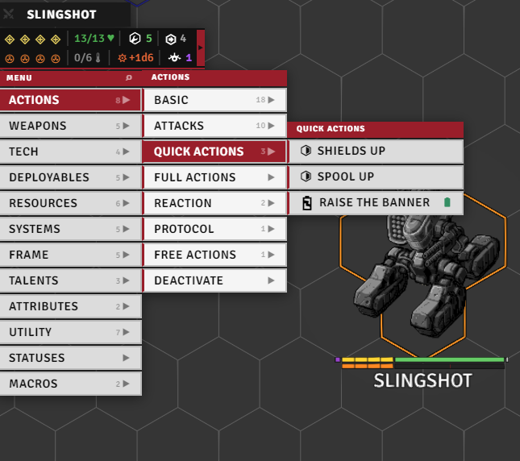
| Category | Holds |
|---|---|
| Actions | Basic quick and full actions, plus your quick / full / reaction / protocol / free actions, and a Deactivate group for active items |
| Attacks | Skirmish, Barrage, basic attack |
| Weapons | Equipped weapons, grouped by mount (mech) or listed flat (NPC / pilot) |
| Tech | Basic Tech, Scan, Lock On, Bolster, Invade |
| Systems | Equipped systems (mech) or system features (NPC) |
| Frame | Core system, traits, integrated systems, built-ins (mech). Stats, traits, class features (NPC) |
| Pilot / Pilot Gear | Pilot stats, talents, gear, skills |
| Talents / Skills | Talent ranks and skill checks |
| Deployables | Deploy, recall, and link buttons, plus the actor's deployables |
| Resources | Counter cells for resources, extra trackables, and ammo |
| Utility | Combat (start/end turn, hide, reinforcement), gameplay (full repair, structure, overheat, resurrect, recharge, generate scan), movement (knockback, teleport, fall, revert), and the aura toggles |
| Statuses | Opens the status panel (below) |
| Macros | Your pinned macros (macroList), right-click a slot to edit it |
Toggle showAidHandleInteractSqueeze to show or hide the Aid, Handle, Interact, and Squeeze entries in the Actions category. These come from PPG (Prototype Pattern Group).
See also: movement actions → MOVEMENT.md, resurrect → WRECK.md, reinforcement → GAMEPLAY_AUTOMATION.md, scan → GAMEPLAY_AUTOMATION.md.
Item interaction¶
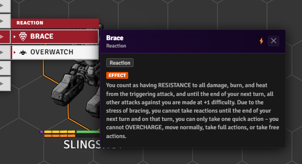
Right-click any item for a detail popup with its description, tags, range / activation, and action-type icon. Menu rows and popups also carry small markers.
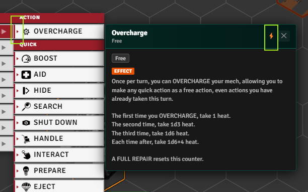
Automation indicator - a tiny triangle on the menu row, and ⚡ in the popup header, mean the item or action has automation.
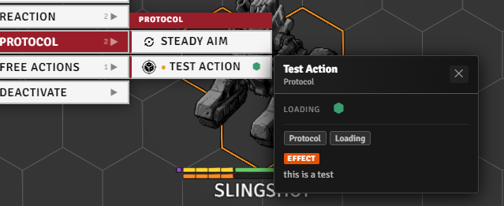
Extra-action dot - an orange ● before an action's name means it was added by extras-UI code (e.g. via addExtraActions, or attached to an item by a registered reaction) rather than by the system itself.
Disable / destroy toggles appear on items that support them (grayed when off, colored when on), and status badges show an item as available, active, destroyed (striped), or locked by a status (faded, clicking still fires it with a warning).
Status panel¶
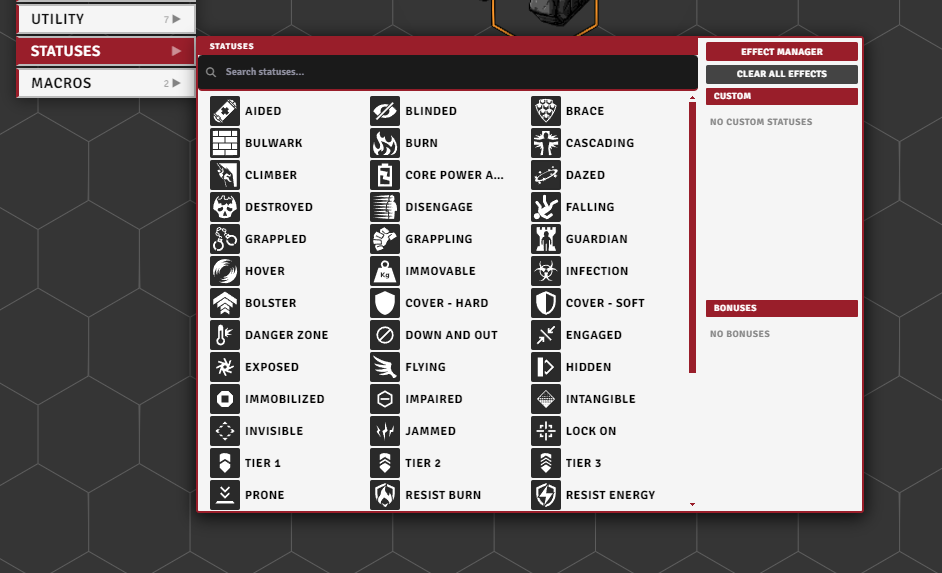
Search and toggle statuses on a grid: left-click adds or increments a stack, right-click removes one. When a status comes from several sources, a sub-manager lets you adjust each one. The panel also:
- lists the token's bonuses (with a trash button to remove them),
- links to the Effect Manager (see EFFECTS_AND_BONUSES.md),
- has a clear-all-effects button,
- and shows your custom statuses when Temporary Custom Statuses is installed.
Log panel¶
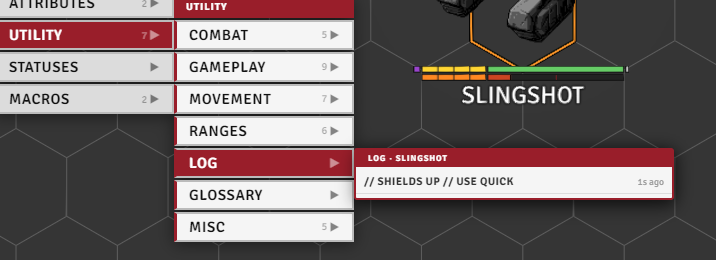
The token's last ~40 action cards, newest first. Click one to expand the full card again.
Glossary panel¶
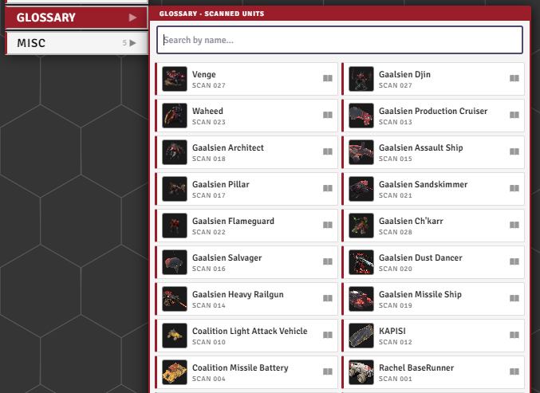
The scans you've run, shown with portraits and names and searchable by name. Click one to open its scan journal entry. (The scan tools themselves are in GAMEPLAY_AUTOMATION.md.)
Search, favorites, macros, and HUD position¶
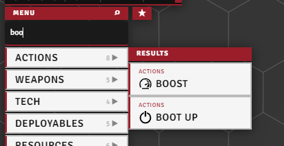
Search - press Alt+F (or click the search icon) to filter every category at once. Matches gather into a single column as you type.
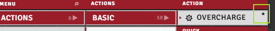
Favorites - Ctrl+right-click an item to star it. The star tab on the HUD's edge gathers your favorites in one place.
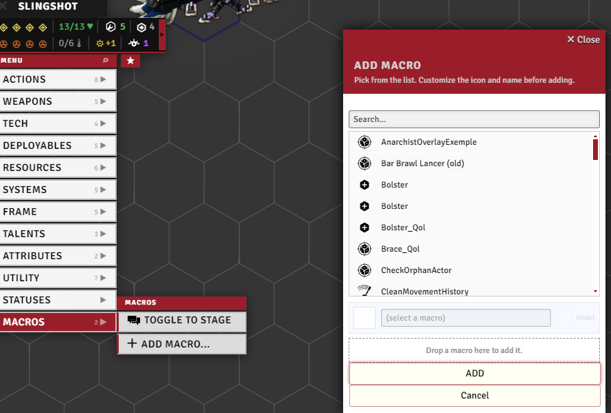
Macro slots - right-click a slot in the Macros row to open its edit dialog, then drop a macro from the hotbar onto the drop zone to assign it.
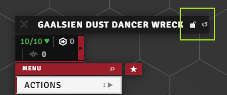
HUD position - the 🔒 icon on the title bar unlocks the HUD for dragging (cursor turns to grab, ↺ resets to default).
Keyboard control¶
With tah.keyboardNav on (default), you can drive the whole HUD from the keyboard instead of the mouse:
- Shift+WASD moves a cursor through the menus: up/down within a column, left/right to step into a submenu or back out.
- Shift+E activates the focused row (left-click), Shift+Q opens its context action (right-click).
- The cursor clears after a spell of no input.
tah.keyboardNavResetDelaysets how long it lingers.
The nav keys are rebindable under TAH: Move / Activate / Context in Foundry's Configure Controls. Bare W/A/S/D/Q/E nudge the selected token. Turn on tah.preventWasdMovement to block that during nav.
Range previews and measures¶
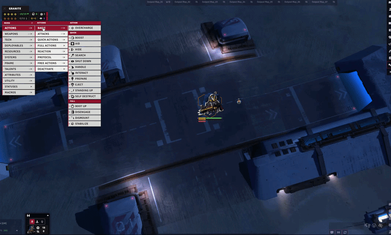
Hover preview - hovering a weapon or action pulses its range on the canvas (rangePreview). The attack card can pulse the attacker's range too (rangePreviewOnAttackCard). Works standalone, no extra module needed.
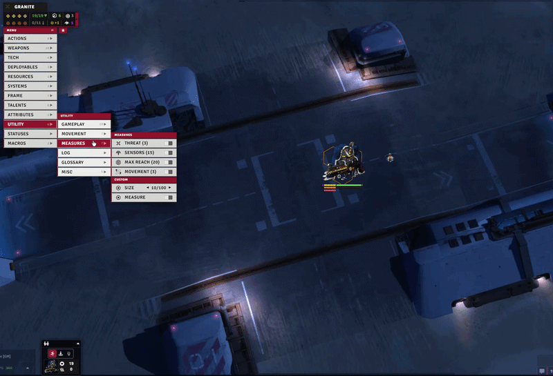
Range measures - toggles in the Utility → Measures menu that drive the Advanced Measure tool to pulse a range on the canvas: Threat, Sensors, Max Reach, and, when the Lancer ruler is on, Movement. A Custom measure lets you set a size and toggle it on.
- Area Elevation Aware (
areaElevationAware) - default for area pickers (blast etc.). When on, areas become 3D volumes that clip to terrain.
Narrative mode¶
With narrativeMode on, the HUD still shows when no token is selected, linked to one of your pilots (pick it from the header). Exposes the pilot-relevant categories: pilot, skills, resources, utility, macros.